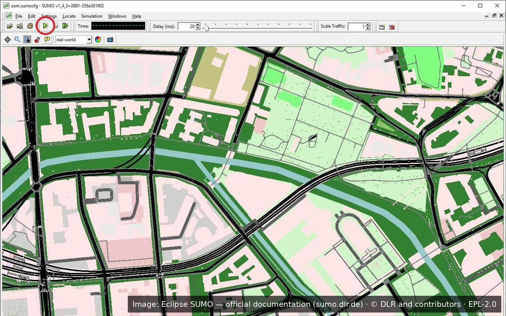

Systems I have designed and built
The systems below were developed within the university: institutional projects in partnership with private companies and government agencies, and proofs of concept and prototypes built to support research, outreach and teaching projects. Since many of them have no public access, here I show how they work — with screens or illustrations and a diagram of each one.
PLANTIA
From a plain-text request to the 3D layout of an agro-industrial plant, ready for SketchUp, with artificial intelligence.
See the case → 02CogniFox
Turns scattered data into interactive dashboards, with approval and AI assistance.
See the case → 03Patas UFLA
A collaborative network that helps lost pets find their owners, with help from artificial intelligence.
See the case → 04GeoProcess
Geographic data queries with maps, charts and alerts, no specialist needed.
See the case → 05Atena
Programming education where every student follows their own path, with instant grading.
See the case → 06 · ResearchCasa Assistiva
A smart home for people with disabilities and older adults, controlled by touch, blocks, gestures, voice or thought.
See the case → 07 · ResearchBoi Feliz
Sensor collars and artificial intelligence that recognize cattle behavior in real time.
See the case → 08 · ResearchRedes Veiculares
Cars that warn each other about accidents, without internet, tested on the streets of Lavras.
See the case →Generative Optimization of 3D Physical Layouts for Agribusiness via Hybrid Artificial Intelligence
A proof of concept for companies that design agribusiness processing plants. Today, putting together the preliminary layout for a sales proposal is manual, slow work full of rework. Here, the client describes the demand in plain text — for example, “I need to process 250 kg of material per hour” —, artificial intelligence turns the request into a specification, the system works out how many machines are needed and finds a position for each one on its own, already connected to each other, producing a model ready for SketchUp. The POC showed the mechanism works end to end and became the technical basis of an R&D proposal in partnership with UFLA. I conceived and developed the proof of concept.
For your startup: shows the full path a startup goes through: from an idea to a working proof of concept and, from there, to a technical document ready to seek funding.
See the condensed version of the funding document →
Status
- Proof of concept completedMechanism validated end to end, in varied scenarios
- Next stageR&D project structured in partnership with UFLA, with a roadmap to product and ready for public funding calls
- DomainAgro-industrial processing plants


How it works
Hover to pause · click a step in the diagram to see the matching screen.
Architecture
The POC is a Python pipeline of decoupled stages, each reading and writing JSON. The request produces a structured prompt for an LLM, which returns only the specification — the model does no calculation. Sizing is deterministic: capacity rules define how many production lines and how many machines of each type the demand requires. The factory is modeled as a discrete 3D grid of cells; each machine occupies a block of cells according to its dimensions and declares typed inputs and outputs on specific faces, like Lego pieces — same type on opposite faces means a compatible connection.
Placement is solved with Google OR-Tools CP-SAT: cell and rotation variables (0°, 90°, 180°, 270°) for every machine, constraints for non-overlap, site limits and mandatory connectivity of every port to a compatible port on another machine; when no arrangement exists, the solver proves infeasibility. This version targets feasibility only — minimizing area, distances and cost is the next stage. A Three.js web interface lets the layout be reviewed and adjusted with magnetic snapping and port validation, and exporters generate a Ruby script for the SketchUp API and an STL file.
From source to dashboard, with versioning and AI under control
A tool that turns scattered data — databases, spreadsheets, map files — into interactive dashboards anyone on the team can use. Whoever looks after the data connects the sources and builds the indicators; nothing reaches the dashboards without review and approval, and the full history of changes is kept. An AI assistant helps create new indicators and dashboards from a plain-text description, always as a proposal for someone to approve. I conceived and developed the platform, which, although still under development, is already in production at Atena.
For your startup: shows speed: from architecture to a version in real use within a few months, with AI helping without taking control away from decision-makers.
Where it is used
- AtenaIn production — the dashboards teachers use to follow student progress
- Version 1.2 betaUnder active development, already in daily use
- DemoPublic bird-occurrence data for Brazil (GBIF)


How it works
Hover to pause · click a step in the diagram to see the matching screen.
Architecture
CogniFox separates engine from interface: every entity is a JSON document with a Pydantic contract (structural validation) and business rules in dedicated validators (semantic validation) — read-only SQL, a closed node palette and DFS cycle detection, the same algorithm reused for pipelines, for signals between widgets and for dependencies between pipelines. Pipelines are graphs executed by Ibis on DuckDB, with static schema propagation node by node, which feeds the visual editor's autocomplete. Every dataset is materialized, the previous version becomes a backup and the health status (OK, BACKUP, FAILURE) propagates down the chain; an orchestrator infers execution order from data dependencies and APScheduler triggers cron runs.
The web layer is Flask, with projects and files in MinIO and sources in MySQL, PostgreSQL, SQLite, CSV or GeoJSON. Dashboards use Gridstack, ECharts and Leaflet, with signals between widgets that recompute only what is affected, and can be embedded in other systems through a Shadow-DOM Web Component with scoped, revocable JWT tokens. The AI assistant (LiteLLM, provider-agnostic) generates entities from the source's real schema; the answer goes through the same validators as the visual editor and, if it fails, the exact error is sent back to the model for up to three attempts — and the result always lands as a draft, subject to the same human approval. Custom code only enters as a catalogued, approved Script, and pipelines can be covered by JSON test cases without writing Python.
A network that helps lost pets find their way home
A collaborative network that brings owners, the community and volunteers together to search for lost pets. The owner registers the pet with photos and the place where it went missing; anyone can report seeing or taking in an animal, on the website or through Telegram. Artificial intelligence describes the photos and points out possible matches between lost pets and sightings, and volunteers review every step — including calling whoever says they have the animal before releasing the contact to the owner. Requirements were gathered with residents, veterinary clinics, pet shops and public agencies. Conceived with three other professors from the department; I designed the architecture and implemented the platform.
For your startup: shows how to think through a complete product, from the user to launch: AI and people working together, with safety and outreach built in.
Status
- UFLA outreach projectServing Lavras and nearby towns
- Version 0.4 betaFinal testing stage
- Open source (MIT license)Other cities and groups can adapt and use it
A UFLA outreach project — not consulting work.


How it works
Hover to pause · click a step in the diagram to see the matching screen.
Architecture
Patas is a Django application on PostgreSQL with PostGIS, for geographic queries such as the distance between sightings, and pgvector, for similarity search between descriptions. Photos live in S3-compatible storage (MinIO, via django-storages); heavy processing runs in the background with Celery and Redis, and celery-beat schedules the periodic match scans. Google sign-in (django-allauth), a Telegram bot with a webhook for volunteers reporting from their phones, hierarchical roles from Level 0 to 5, an audit trail, volunteer scoring, and deployment with Docker Compose and continuous integration on GitHub Actions.
The AI pipeline uses a vision model through LiteLLM — compatible with local models served by Ollama — to check whether the photo is usable and to generate an identification-oriented description. Color and size are extracted with a controlled vocabulary and a Portuguese spaCy dependency parser, which tells apart, for instance, coat color from eye color. The description becomes an embedding, and matching combines cosine similarity, geographic proximity, time proximity and feature overlap (Jaccard) into a weighted score whose breakdown is stored to calibrate the weights with real data. People validate every step: Level 3 reviews descriptions, Level 4 confirms the match and verifies identity by phone before releasing contact, and the public map shows only an approximate area.
Questions, dashboards and alerts over geospatial data
A platform for querying geographic data without being a specialist. The technical team prepares the databases and sets up ready-made questions; users pick the parameters and get the answer as maps, charts and tables, can revisit past queries, receive automatic alerts when something needs attention and explore interactive dashboards. I designed the architecture and implemented a large part of the system, with the collaboration of other developers, and I lead its technical evolution.
For your startup: shows the ability to take a system from prototype to production and keep it evolving, serving different companies and public agencies.
Where it has been used
- Minas Gerais Agriculture Institute (IMA)In production
- Brazilian Federal Prosecution Service (MPF)At prototype level
- Vale S.A.Internal tool for the research team to add their data, under the name Sustainable Territory Management Platform
- Suzano S.A.At prototype level, in a project between Zetta, UFLA's innovation agency, and the company
- INPI registration — GeoProcessBR512024003312-2 (2024)
- INPI registration — Suzano projectBR512025006681-3 (2025)
All of these are UFLA institutional projects I took part in as a professor — not consulting work.


How it works
Hover to pause · click a step in the diagram to see the matching screen.
Architecture
GeoProcess is a distributed framework built around a question-and-answer model, split into three decoupled modules: the Portal (Django, with a Bootstrap/AdminLTE, Plotly and OpenLayers front end), the Gateway (FastAPI on Uvicorn) and the Consumers, Python services that actually answer the questions. Portal and Gateway talk over a web API; Gateway and Consumers exchange JSON messages through RabbitMQ (AMQP), in independent, asynchronous flows. Each consumer registers with the Gateway, announcing its project, questions and parameters — new analyses join the system without touching the Portal, and several instances of the same consumer can run in parallel for horizontal scalability.
The Gateway owns security and traceability: users sign in through Single Sign-On (OIDC), the Portal forwards the JWT and the Gateway decides which projects and questions each profile can see, logging every request and answer in PostgreSQL — which is where the history comes from. A shared library provides the consumers' base class and an answer contract that abstracts maps, charts, tables and messages; developers write only the query and the result assembly, while distribution, formatting and access control are handled by the platform. Alerts are scheduled questions that notify only when the answer is not empty, and a Visual Builder lets the answer screen be prototyped with the client (Wizard of Oz technique) and generates the consumer skeleton in Python. Spatial data lives in PostGIS and GeoServer, and operations are monitored with Prometheus and Grafana.
Adaptive learning paths for teaching programming
A programming-education platform in which each student follows their own path: texts, videos, exercises and problems are chained together, and the next step depends on how the student answered. Exercises are graded instantly, with immediate feedback, which makes it possible to follow hundreds of students per term. The platform replaced the lecture classes of Programming Fundamentals for UFLA's engineering programs and has served thousands of students. I conceived the method and designed and implemented the platform; other professors produced the content. Its newest module, Atena Tutor, uses artificial intelligence to teach students how to solve problems step by step.
For your startup: shows a product that changed the routine of thousands of users and keeps gaining new modules, such as the AI tutor.
Where it is used
- UFLA — engineering programsProgramming Fundamentals I, in use since 2022
- ResultsPass rate close to 80% after the method was adopted
- Atena TutorBeta version, integrated with Atena
A UFLA institutional project — not consulting work.


How it works
Hover to pause · click a step in the diagram to see the matching screen.
Architecture
Atena is a Django application on MySQL/MariaDB, served by Gunicorn behind Nginx and authenticated through the university's CAS. The data model is built around learning objects: texts, videos, slides, notebooks, image maps, quizzes and problems inherit from a common base type, and each learning path is a graph in which every node points to the next one according to the result of the answer — correct, partial, incorrect, or the option chosen in a quiz. Paths can be drawn in a visual editor and are validated before publishing. Problems accept Python, Java, C and C++ and run in three modes: in the browser with Pyodide, as blocks with Blockly, or on the server inside an AppArmor-confined sandbox, with an execution pool controlled by locks and time limits.
Graded activities compare output against test cases — with similarity algorithms such as Levenshtein and Smith-Waterman — and inspect the syntax tree to require specific functions and parameters; exams can be restricted by IP and unlocked with a TOTP code. Atena Tutor is a separate service (Flask, SQLAlchemy/Alembic, PostgreSQL, Docker) with federated login through signed JWTs. An LLM generates reference solutions that are accepted only after passing the test cases, retrying from the detailed error; the flowchart is derived from the AST without AI, and the LLM only labels blocks already delimited by the parser — it never rewrites the code. Comprehension checks compare the student's answer using local embeddings, hints unlock by attempts and elapsed time, and analytics dashboards are integrated with CogniFox.
Prototypes with our own hardware and software
Research projects in which we built both the devices and the systems. They show that if your idea depends on sensors, connected devices or wireless communication, it also fits in a proof of concept.
A smart home that adapts to the people who live in it
A research line on smart homes for people with disabilities and older adults. The same house can be controlled in six different ways — from a phone with a screen reader, with blocks the residents assemble themselves, with a sensor glove, with gestures in front of a camera, with voice commands in Portuguese, and even by thought, with a brain-activity sensor — so each person uses whatever works best for them. The prototypes were evaluated with real users, including people with visual impairments and older adults, and led to articles in international journals and a software registration with Brazil's patent office (INPI). Everything was designed and built by our team — the hardware, with the microcontroller and sensor boards installed in the appliances, the glove and the control modules, and the software, from the home hub to the control apps —, at a time when smart homes were not yet off-the-shelf products. I designed the architecture and built the prototypes, in partnership with Professor André Pimenta Freire, an expert in human-computer interaction.
Results
- International journal articlesPersonal and Ubiquitous Computing · Behaviour & Information Technology · Multimedia Tools and Applications
- Brain-interface studyHome control through mental commands, evaluated with 30 participants
- INPI registrationCasa Assistiva computer program — BR512018000396-6 (2018)
- Alcance Lab — UFLAResearch funded by public agencies, including FINEP
A UFLA research project — not consulting work.


How it works
Hover to pause · click a step in the diagram to see the matching image.
Architecture
Home devices — lamps, outlets and appliances — are driven by ESP8266 microcontrollers that talk to a central broker over MQTT, a lightweight publish/subscribe protocol suited to home networks. Every interface publishes commands using the same topic scheme, so new interaction methods can be added without touching the devices. The first version is a Java (JSP) web application with per-room pages designed for screen readers; the latest version was rewritten in Python with Django.
End-user programming uses Blockly, with custom trigger blocks (time, sensors, appliance state) and action blocks, translated into rules run by the hub. The glove pairs an ESP8266 with the MPU-6050 accelerometer and gyroscope to recognize hand gestures; camera control uses TensorFlow.js with transfer learning on a pre-trained network, trained in the browser from a few of the user's own examples; and voice commands go through CoGrOO, a Portuguese language analyzer that extracts the action and the device from the sentence before it becomes an MQTT message. For people with severe motor limitations, an Emotiv EPOC+ EEG headset (14 channels, over Bluetooth) captures per-user trained mental commands that become home actions over the same MQTT bus; usability was evaluated with 30 participants using a think-aloud protocol and video analysis.
Smart collars that recognize cattle behavior
A cattle-monitoring proof of concept with collars that measure the animal's movements around the clock. The collars talk to each other and send data to a small field station; artificial intelligence learns to recognize what the animal is doing — walking, standing still, sitting, getting up or turning — and a dashboard shows it in real time. Behavior changes are often the first sign of illness, heat or stress, and following them closely in a large herd is impossible without technology. Tests were run with real animals — dogs, because with them each behavior could be requested on command during training (sit, lie down, walk, get up) and the exact activity recorded, something impossible to control with cattle in the pasture. We designed and built both the collar hardware and the software — from the program running on each collar to the field app and the dashboard.
Status
- Proof of concept completedCollars, field station, app and dashboard working end to end
- First resultsIn tests with dogs, about 3 out of 4 behaviors recognized correctly, with a still small dataset
- What the POC showedRecognizing cattle behavior with low-cost collars is feasible; accuracy grows with more field data
A UFLA research project — not consulting work.


How it works
Hover to pause · click a step in the diagram to see the matching image.
Architecture
Each collar has an ESP8266 microcontroller with an MPU-6050 accelerometer and gyroscope, measuring angles and accelerations on three axes; a Kalman filter fuses both readings to estimate tilt with less noise. Collars exchange messages over ESP-NOW, a peer-to-peer protocol that needs no Wi-Fi router, and a collector node forwards the data over MQTT or serial to a Raspberry Pi station. Bluetooth links and direct collection on a phone were also tested, with a Flutter app used to label the behavior observed in the field.
For classification, each sample is a window of 100 readings of each signal; features are standardized and reduced with PCA and LDA, and logistic regression, linear and RBF-kernel SVM, decision tree, Random Forest and KNN were compared with cross-validation and hyperparameter search in scikit-learn pipelines. In the tests with dogs, the best models reached about 77% accuracy on the test set, on a still small dataset. A Streamlit dashboard reads the data in real time and fits polynomial regression curves to visualize each movement.
Vehicles that warn each other about accidents, without internet
A prototype of direct vehicle-to-vehicle communication to spread accident alerts along the road. Each car carries a small GPS device that talks to the vehicles around it, with no internet or cell tower needed; when an accident happens, the alert is relayed from car to car to the drivers behind, with rules that keep the communication from getting congested. The system was tested with real cars on the streets of Lavras and in traffic simulations with many vehicles. We designed and built the hardware and the software — from the device installed in the cars to the analysis tools —, in partnership with Professor Luiz Henrique Andrade Correia, a networking expert.
Results
- INPI registrationRedes Veiculares computer program — BR512019002553-9 (2019)
- Field testsReal vehicles on the streets of Lavras, in 2019
A UFLA research project — not consulting work.



How it works
Hover to pause · click a step in the diagram to see the matching image.
Architecture
In each vehicle, an Android phone provides the GPS position to an ESP8266 microcontroller node, which talks to the others over ESP-NOW, a low-latency peer-to-peer protocol that needs no router. Nodes periodically exchange position, speed and a trust index for each neighbor, and relay messages with hop-count and retransmission control, with rules for disseminating accident alerts without flooding the network. The firmware also implements a mode following the European ETSI standard for cooperative vehicular messages, used as a comparison baseline.
A Java desktop application receives node data over sockets, shows vehicles on a map, generates reports and can emulate nodes, and integrates with the SUMO traffic simulator to test the protocol with vehicle flows on routes at 20 to 60 km/h. In field tests, each node logs its own and its neighbors' positions in JSON; Python scripts compare what each car knew about the others with their real positions, compute error and trust per node pair, and export GeoJSON and KML for visualization. Android and Flutter apps let the nodes be followed on a phone.
Ready to put your idea to the test?
Tell me in a few lines what you want to test, validate or present — and we'll find the best path together.